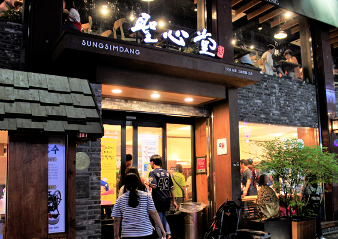
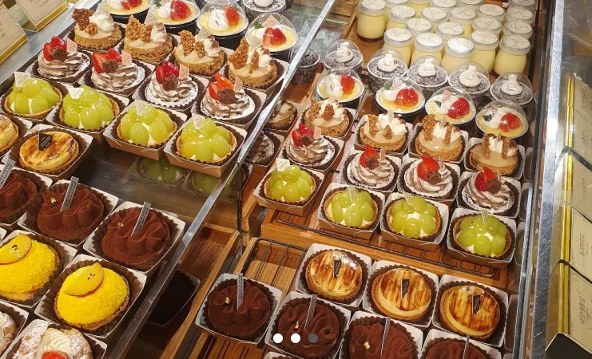

오직 빵을 위해 방문한다고 할 정도로 대전은 빵의 도시가 되어버렸다. 그중에서 가장 으뜸인 빵집은 성심당인데, 온갖 SNS에서도 유행하고 소문이 자자할 만큼 이제는 대전의 명물이 되어버렸다. 성심당의 빵들은 성심당만의 재료들과 조화들로 특색 있는 메뉴들을 자랑하는 것으로 유명하다. 다양한 빵들이 있지만 대전 현지인들이 추천하는 몇 가지 빵들을 포인트로 소개해 본다.
크기만큼이나 맛도 큰 만족을 주는 빵을 원한다면 보문산메아리를 추천한다. 포슬포슬한 식감과 더불어 달콤한 맛이 어우러져서 빵을 좋아한다면 무조건 반할 수밖에 없을 정도로 인기이다. 특히, 선물용으로 많이들 사 가는데 한번 맛보면 다시 찾게 되는 매력을 지니고 있다.
먹물방망이는 바게트 형태의 빵에 달콤한 크림이 들어간 제품으로서, 독특한 모양과 맛이 특징이다. 그래서인지 많은 사람들의 관심을 끌고 있는 빵으로서, 성심당을 방문한다면 꼭 시도해서 먹어볼 만한 빵이다. 무엇보다 쫀득한 식감과 부드러운 크림치즈의 조화가 정말 좋은 달콤한 연유 크림이 어우러진 맛이 일품이다.
동글동글한 모양의 빅매치는 겉은 쿠키도우로 되어 있으며, 안에는 크림치즈 필링이 들어간 독특한 구성의 빵이다. 메이플 시럽의 달콤함이 더해져서 호불호가 거의 없는 맛으로서, 성심당의 베스트셀러 중 하나로 유명하다. 한입 베어 물게 되면 바사삭한 촉감과 함께 속은 꾸덕꾸덕한 크림치즈의 풍미와 달콤한 메이플시럽을 맛볼 수 있다.
성심당의 대표적인 빵 중 하나로 유명한 토요빵은 겉은 소보루로 되어 있으며, 안에는 쫀득한 찹쌀이 들어 있어서 남녀노소 누구나 좋아하는 맛이다. 이 빵은 특히 전 연령층 중에서도 특히 어르신들에게 인기가 많은데, 그래서인지 성심당을 방문했을 때 반드시 구매 목록에 넣어야 하는 빵 아이템 중 하나로 손꼽힌다.
앞서 말한 보문산메아리의 작은 버전인 작은 메아리는 겉은 설탕 코팅으로 바삭하면서도 안은 부드러운 식감을 자랑한다. 간식으로 먹기에 적합하고, 달콤한 맛이 일품이어서 특히 어린이들에게 큰 인기를 끌고 있다. 포슬포슬한 보문산메아리를 압축시킨 듯한 작은 메아리는 바삭한 식감이 일품인데, 2030에게 가장 인기가 좋아서 지인들이나 빵을 좋아하시는 분들에게 선물용으로도 제격이다.
바삭한 바게트에 부드러운 버터가 들어간 빵인 성심앙버터는 최근에 유행하는 앙버터 빵의 인기에 힘입어서 성심당에서도 많은 사랑을 받는 효자 빵 메뉴 중 하나이다. 바삭한 식감과 부드러운 버터의 조화가 일품이며, 선물용으로도 매우 인기가 높다.
수십 가지의 특색 있는 베이커리 종류는 물론, '성심당 케익부띠끄'를 함께 운영하여 다양한 디저트류까지 경험할 수 있다. 대전 지역 배송, KTX 배송, 전국에서 받아볼 수 있는 택배 배송 등등 배송 방법에 따라서 주문이 가능한 베이커리의 종류도 달라진다. 택배의 경우, 최소 주문 금액이 3만 원이니 기억하자. 많은 양이 필요하지 않은 가구는 빵을 담을 수 있는 종이백도 함께 동봉되니 지인들에게 선물하거나 함께 공동 주문을 하면 좋을 듯하다.
